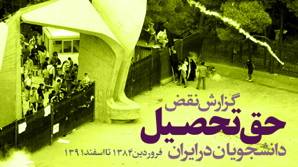

پذيرش > اخبار > گزارش ۸ سال نقض حق تحصیل دانشجویان در ایران: بیش از ۱۰۰۰ مورد محرومیت از تحصیل و (...)


 گزارش ۸ سال نقض حق تحصیل دانشجویان در ایران: بیش از ۱۰۰۰ مورد محرومیت از تحصیل و دانشجوی ستاره دار گزارش ۸ سال نقض حق تحصیل دانشجویان در ایران: بیش از ۱۰۰۰ مورد محرومیت از تحصیل و دانشجوی ستاره دار
18 خرداد 1392 - - نسخه قابل چاپ
دانشجو نیوز: گزارش ۸ سال نقض حق تحصیل شهروندان ایرانی در دانشگاه های کشور با هدف معرفی سازمان های موثر در نقض حق تحصیل و ارائه اسامی بیش از ۱۰۰۰ مورد محرومین از تحصیل و دانشجویان ستاره دار منتشر شد.

این گزارش که توسط کمیسیون حقوق بشر دفتر تحکیم وحدت با همکاری سایت دانشجونیوز و کمپین دفاع از حق تحصیل آماده شده، به ارائه برخی از مستندات و همچنین اطلاعات طبقه بندی شده بیش از ۱۰۰۰ مورد محرومین از تحصیل از فروردین ماه ۱۳۸۴ تا اسفند ۱۳۹۱ می پردازد.
گزارش نقض حق تحصیل همچنین در اختیار گزارشگر ویژه حقوق بشر سازمان ملل متحد در امور ایران و گزارشگر ویژه حق تحصیل سازمان ملل متحد قرار خواهد گرفت.
این گزارش در حالی منتشر می شود که در روزهای اخیر روابط عمومی وزارت علوم با صدور اطلاعیه ای اعلام کرده بود که "ستارهدار کردن دانشجویان توسط وزارت علوم در سالهای اخیر کذب محض است".
پس از روی کار آمدن محمود احمدی نژاد در انتخابات ریاست جمهوری سال ۱۳۸۴، بخشی از سیاست های وزارت علوم ایران و سازمان سنجش آموزش کشور به طور پررنگ تری در راستای تصمیمات نهادهای سرکوبگر برون دانشگاهی مانند وزارت اطلاعات و بخش هایی از قوه قضائیه قرار گرفت. علاوه بر این، با تصمیم وزیر علوم و تایید شورای عالی انقلاب فرهنگی، افراد جدیدی به عنوان روسای دانشگاه های کشور منصوب شدند که در طول این سال ها سهم عمده ای در محرومیت از تحصیل دانشجویان داشته اند. تکذیب وجود دانشجویان ستاره دار در این سال ها در حالی صورت می گیرد که هم اکنون شماری از این دانشجویان به دلیل فعالیت های مرتبط با حق تحصیل در زندان هستند.
گزارش فارسی: برای دریافت و مشاهده متن کامل فارسی این گزارش اینجا را انتخاب کنید.
گزارش انگلیسی: برای دریافت و مشاهده متن کامل انگلیسی این گزارش اینجا را انتخاب کنید.
این گزارش در سه بخش کلی، اطلاعات اولیه در مورد نقض سیستماتیک حق تحصیل و آموزش شهروندان ایرانی را ارائه کرده است. بخش اول این گزارش به نقش نهادهای موثر در نقض حق تحصیل شماری از شهروندان در ایران می پردازد. بخش دوم این گزارش به نحوه نقض حق تحصیل پنج گروه مشخص؛ دانشجویان ستاره دار، محروم از تحصیل، اخراجی، اقلیت های مذهبی و زنان؛ در ایران با ارائه جزئیات و نمونه هایی در مورد هر گروه می پردازد. بخش سوم و نهایی این گزارش حاوی پیوست هایی مانند فهرست اطلاعات طبقه بندی شده بیش از ۱۰۰۰ مورد نقض حق تحصیل شهروندان ایرانی (۲۵۰ مورد اخراج اساتید و دانشجویان و ۷۶۸ مورد محرومیت از تحصیل) پس از سال ۱۳۸۴ و مدارک اخراج و محرومیت از تحصیل دانشجویان است.
برخی از بخش های این گزارش تفصیلی در حالی در ادامه آمده است که برای مشاهده اسامی محرومین از تحصیل و دریافت گزارش کامل می توانید از اینجا اقدام کنید.
بخش اول- نهادهای رسمی موثر در محروميت از تحصيل شهروندان ايرانی
در سال های اخیر، سازمان های مختلفی در کشور در محرومیت از تحصیل شهروندان ایرانی نقش مستقیم و یا غیر مستقیم ایفا کرده اند. در این بخش به معرفی برخی از این نهادها و نحوه عملکرد آنان می پردازیم.
الف. سازمان سنجش آموزش کشور
ب. شورای عالی انقلاب فرهنگی
ج. وزارت علوم، تحقیقات و فناوری
د. دانشگاه آزاد اسلامی و وزارت بهداشت، درمان و آموزش پزشکی
ه. وزارت اطلاعات
و. قوه قضائیه
ز. کمیته انضباطی دانشگاه و حراست
بخش دوم: گروه های مختلف محروم از تحصيل در ايران
همان گونه که ذکر شد، دانشجویان ایرانی در سال های اخیر به دلایل و شکل های مختلف از حق بدیهی تحصیل در دانشگاه های ایران محروم شده اند. در پیوست ۵ این گزارش به ۷۶۸ مورد احکام محرومیت دانشجویان از تحصیل و ۲۵۰ مورد اخراج دانشجویان و اساتید از دانشگاه های ایران با شرح جزئیات این موارد از فروردین ۱۳۸۴ تا اسفند ماه ۱۳۹۱ اشاره شده است. علاوه بر این نزدیک به ۶۵۰ مورد محرومیت از تحصیل و اخراج شهروندان از دانشگاه های کشور به ثبت رسیده که اسامی آنان منتشر نشده است. لازم به ذکر است این گزارش تنها بخشی از موارد مستند شده ای است که شهروندان ایرانی از حق بدیهی تحصیل محروم شده اند. در بسیاری از موارد دانشجویان به دلیل فضای امنیتی و یا قول هایی مبنی بر تجدیدنظر در پرونده از افشای اطلاعات مرتبط با محرومیت از تحصیل خود خودداری می کنند.
الف. دانشجویان ستاره دار
ب. محرومین موقت و دائم از تحصیل
ج. اخراج از دانشگاه
د. محرومیت اقلیت های مذهبی از تحصیل
ه. محرومیت زنان از تحصیل
نتيجه گيری
اقدام حکومت جمهوری اسلامی ایران مبنی بر جلوگیری از تحصیل شمار زیادی از شهروندان ایرانی به دلیل عقاید سیاسی، مذهبی و یا فعالیت های صلح آمیز بدور از خشونت، و یا تبعیض تحصیلی علیه زنان به دلیل جنسیت، علاوه بر اینکه رفتاری مخالف با شان و کرامت انسانی است؛ مخالف بندهایی از قانون اساسی کشور و همچنین میثاق ها و کنوانسیون های بین المللی است که ایران به رعایت مفاد آن متعهد شده است.
بر اساس بندهایی از ماده دوم و ماده سیزدهم "میثاق بین المللی حقوق اقتصادی، اجتماعی و فرهنگی"که جمهوری اسلامی ایران نیز بدان متعهد شده است، آموزش عالی باید به طور مساوی برای همه شهروندان، "بدون هیچ نوع تبعیض از حیث نژاد، رنگ، جنس، زبان، مذهب، عقیده سیاسی و یا هر عقیده دیگر یا اصل و منشاء ملی یا اجتماعی، دارایی، نسب یا هر وضعیت دیگر" در دسترس باشد.
رفتار جمهوری اسلامی در محرومیت شهروندان از تحصیل همچنین به طور آشکار با اصول متعددی از اعلامیه جهانی حقوق بشر، پیمان بین المللی حقوق مدنی و سیاسی و کنوانسیون یونسکو علیه تبعیض تحصیلی در تضاد است.
در بخش هایی از بند اول ماده 26 اعلامیه جهانی حقوق بشر به صراحت ذکر شده است که "دستیابی به آموزش عالی به شکلی برابر برای تمامی افراد و بر پایه شایستگی های فردی صورت پذیرد". این در حالی است که بندهای دیگری از این این اعلامیه جهان شمول نیز به شکلی اشکار توسط جمهوری اسلامی ایران با محرومیت از تحصیل شهروندان به شکلی غیر قانونی و تبعیض آمیز نقض می گردد.
در بند نخست کنوانسیون یونسکو علیه تبعیض تحصیلی نیز هرگونه محرومیت و محدودیتی بر اساس مواردی مانند زبان، مذهبی، عقاید سیاسی یا سایر عقاید نفی شده است.
اگر چه جمهوری اسلامی ایران همواره با انکار محرومیت از تحصیل شهروندان به دلایل مختلف سیاسی، عقیدتی و ... مسئولیت اقدامات غیر انسانی خود را نپذیرفته است، اما تصویب قوانین ناعادلانه، تعداد بالای محرومین از تحصیل در ایران و شواهد موثق در این زمینه می بایست به اقدام جدی و پیگیرانه از سوی نهادهای مسئول بین المللی در این زمینه منجر گردد.
حکومت ایران باید در مرحله نخست کلیه احکام ناعادلانه محرومیت از تحصیل صادر شده را لغو، و نسبت به تغییر قوانین تبعیض آمیز خود اقدام نماید. همچنین دانشجویان محروم از تحصیل زندانی مانند ضیا نبوی و مجید دری که به جرم پیگیری حق تحصیل و عضویت در شورای دفاع از حق تحصیل بازداشت و به احکام طولانی مدت حبس محکوم شده اند، را آزاد کند.
اسامی بیش از ۱۰۰۰ مورد محرومیت از تحصیل شهروندان ایرانی در دانشگاه های کشور را می توانید از پیوست ۵ گزارش، صفحه ۶۳، دنبال کنید.
ارسال به
بالاترین
،
توییتر
،
فریندفید
،
فیسبوک
در همين بخش :
 پروین ذبیحی برنده جایزه حقوق بشری سازمان غيردولتى اتريشى سودويند شد پروین ذبیحی برنده جایزه حقوق بشری سازمان غيردولتى اتريشى سودويند شد
پخش کارت پستال و بروشور در روز جهانی زن در تهران
تمدید زمان برای امضای بیانیهی جمعی از فعالان زن به مناسبت هشت مارس
مجوزی که در نطفه خفه شد
بیش از 2000 امضا در اعتراض به تبعیض های آموزشی به مجلس تحویل داده شد
ديگر بخش ها :
طرح یک میلیون امضا
|
مقالات
|
سایت نوشته ها
|
اخبار
|
گزارش كمپين
|
گفت و گو
|
علیه سکوت
|
كوچه به كوچه
|
نامه های شما
|
گزارش ویژه
|
گفتگو با اعضا
|
ویژه سالگرد کمپین
|
تصویر برابری
|
دل آرام علی
|
تریبون
|
مقالات
|
تاریخ شفاهی
|
خارج از چارچوب
|
کتابخانه
|
درباره کمپین
|
کمپین در شهرها
|
کمپین در بند
|
صدای تغییر
|
ویژه 22 خرداد
|
لایحه حمایت از خانواده
|
گالری
|
عشا مومنی
|
امیر یعقوبعلی
|
خدیجه مقدم
|
راحله عسگری زاده و نسیم خسروی
|
پروین اردلان،جلوه جواهری، مریم حسین خواه، ناهید کشاورز
|
زینب پیغمبرزاده
|
سعیده امین، سارا ایمانیان، محبوبه حسین زاده، ناهید کشاورز و همایون نامی
|
احترام شادفر
|
نسیم سرابندی زاده،فاطمه دهدشتی
|
وبلاگ مهمان
|
پرونده خرم آباد
|
دستگیری ها
|
مریم مالک
|
پرستو اللهیاری
|
مهرنوش اعتمادی
|
سمیه رشیدی
|
Other Languages
|
همراهان
|
«فراخوان کمپین ده روز با بهاره هدایت»
| English
|